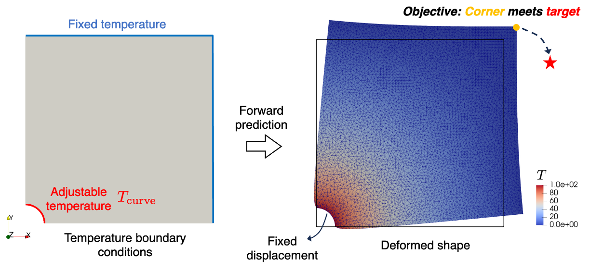

Thermal mechanical control#
Problem definition#
In this example, an inverse problem is considered. The design parameter is the Dirichlet boundary condition. The target of this tutorial is to use JAX-FEM to automatically find the gradient of the objective function with respect to this design variable.
This inverse control problem is to consider thermo-elasticity where a temperature field \(T_{\textrm{curve}}\) applied to a curved boundary is optimized to achieve a desired mechanical deformation. Specifically, the objective is to make the top right corner of a 2D square plate with a circular hole undergo thermal deformation that reaches a prescribed target point.
Governing equations#
The forward thermo-mechanical coupling problem consists of two physics:
1. Steady-state heat conduction:
where:
\(k\): Thermal conductivity
\(\Omega\): Quarter of a square plate with circular hole (2D)
\(\Gamma_{D_1, T}\): Curved boundary with adjustable temperature
\(\Gamma_{D_2, T}\): Fixed-temperature (\(T=0\)) boundary
\(\Gamma_{N, T}\): Thermally insulated boundary
2. Mechanical equilibrium:
with the thermo-elastic constitutive relation:
where:
\(\boldsymbol{\varepsilon}\): Strain tensor
\(\lambda, \mu\): Lamé parameters (isotropic aluminum)
\(\kappa\): Thermal expansion coefficient
\(T\): Relative temperature change from ambient
Weak form#
Find \(T\) and \(\boldsymbol{u}\) such that for any test functions \(\delta T\) and \(\delta \boldsymbol{u}\):
This is a one-way coupled system – temperature influences deformation, but deformation does not affect temperature.
Optimization problem#
The inverse control problem is formulated as the following PDE-constrained optimization:
where \(\boldsymbol{u}_{\textrm{corner}}\) is the displacement at the top-right corner induced by boundary temperature \(T_{\textrm{curve}}\), and \(\boldsymbol{u}_{\textrm{target}}=[0.001, -0.001]\) is the prescribed target displacement.
Implementation#
For the implementation, we first import some necessary modules.
[ ]:
import numpy as onp
import jax
import jax.numpy as np
import os
import meshio
import glob
import sys
import logging
# Import JAX-FEM specific modules.
from jax_fem.problem import Problem
from jax_fem.solver import ad_wrapper
from jax_fem.generate_mesh import get_meshio_cell_type, Mesh, box_mesh_gmsh
from jax_fem import logger
logger.setLevel(logging.INFO)
Weak form#
These global parameters define the fundamental mechanical and thermal properties of the material, which remain constant during the coupled calculation.
[2]:
# Define global parameters (Never to be changed)
T0 = 293. # ambient temperature
E = 70e3
nu = 0.3
mu = E/(2.*(1. + nu))
lmbda = E*nu/((1+nu)*(1-2*nu)) # plane strain
rho = 2700. # density
alpha = 2.31e-5 # thermal expansion coefficient
kappa = alpha*(2*mu + 3*lmbda)
k = 237e-6 # thermal conductivity
The custom_init method initializes two finite element spaces: one for the displacement field (\(\boldsymbol{u}\)) and one for the temperature field (\(T\)).
[ ]:
# Define the coupling problems.
class ThermalMechanical(Problem):
def custom_init(self):
self.fe_u = self.fes[0]
self.fe_T = self.fes[1]
The get_universal_kernel method returns a universal kernel function for computing the weak form. It internally defines strain and stress functions, where the stress calculation considers thermal expansion effects.
[ ]:
def get_universal_kernel(self):
def strain(u_grad):
return 0.5 * (u_grad + u_grad.T)
def stress(u_grad, T):
epsilon = 0.5 * (u_grad + u_grad.T)
sigma = lmbda * np.trace(epsilon) * np.eye(self.dim) + 2 * mu * epsilon - kappa * T * np.eye(self.dim)
return sigma
The universal_kernel function is the core of the weak form, handling element-level computations. Parameters include the flattened cell solution, coordinates, shape function gradients, Jacobian determinant weights, and test function gradients.
[ ]:
def universal_kernel(cell_sol_flat, x, cell_shape_grads, cell_JxW, cell_v_grads_JxW):
# cell_sol_flat: (num_nodes*vec + ...,)
# x: (num_quads, dim)
# cell_shape_grads: (num_quads, num_nodes + ..., dim)
# cell_JxW: (num_vars, num_quads)
# cell_v_grads_JxW: (num_quads, num_nodes + ..., 1, dim)
## Split
# [(num_nodes, vec), ...]
cell_sol_list = self.unflatten_fn_dof(cell_sol_flat)
cell_sol_u, cell_sol_T = cell_sol_list
cell_shape_grads_list = [cell_shape_grads[:, self.num_nodes_cumsum[i]: self.num_nodes_cumsum[i+1], :]
for i in range(self.num_vars)]
cell_shape_grads_u, cell_shape_grads_T = cell_shape_grads_list
cell_v_grads_JxW_list = [cell_v_grads_JxW[:, self.num_nodes_cumsum[i]: self.num_nodes_cumsum[i+1], :, :]
for i in range(self.num_vars)]
cell_v_grads_JxW_u, cell_v_grads_JxW_T = cell_v_grads_JxW_list
cell_JxW_u, cell_JxW_T = cell_JxW[0], cell_JxW[1]
# (1, num_nodes, vec) * (num_quads, num_nodes, 1) -> (num_quads, vec)
T = np.sum(cell_sol_T[None,:,:] * self.fe_T.shape_vals[:,:,None],axis=1)
# (num_quads, vec, dim)
u_grads = np.sum(cell_sol_u[None,:,:,None] * cell_shape_grads_u[:,:,None,:], axis=1)
## Handles the term 'k * inner(grad(T_crt), grad(Q)) * dx'
# (1, num_nodes, vec, 1) * (num_quads, num_nodes, 1, dim) -> (num_quads, num_nodes, vec, dim)
# -> (num_quads, vec, dim)
T_grads = np.sum(cell_sol_T[None,:,:,None] * cell_shape_grads_T[:,:,None,:], axis=1)
# (num_quads, 1, vec, dim) * (num_quads, num_nodes, 1, dim) -> (num_nodes, vec)
val3 = np.sum(k * T_grads[:,None,:,:] * cell_v_grads_JxW_T,axis=(0,-1))
## Handles the term 'inner(sigma, grad(v)) * dx'
u_physics = jax.vmap(stress)(u_grads, T)
# (num_quads, 1, vec, dim) * (num_quads, num_nodes, 1, dim) -> (num_nodes, vec)
val4 = np.sum(u_physics[:,None,:,:] * cell_v_grads_JxW_u,axis=(0,-1))
weak_form = [val4, val3]
return jax.flatten_util.ravel_pytree(weak_form)[0]
return universal_kernel
The set_params method allows assigning parameters for the temperature field on the Dirichlet boundary with vals_list.
[ ]:
def set_params(self, params):
self.fe_T.vals_list[0] = params
Mesh#
Here we read a mesh input from a local file and use the TRI3 element to discretize the computational domain.
[4]:
meshio_mesh = meshio.read(os.path.join(os.path.dirname(__file__), 'u.vtu'))
ele_type = 'TRI3'
cell_type = get_meshio_cell_type(ele_type)
mesh = Mesh(meshio_mesh.points[:, :2], meshio_mesh.cells_dict[cell_type])
Boundary conditions#
Then we can define the Dirichlet boundary condition. The actual value of \(T\) on the curved boundary will be updated later by the parameter \(\theta\) with the method set_params in the weak form definition above.
[5]:
def right(point):
return np.isclose(point[0], 1., atol=1e-5)
def top(point):
return np.isclose(point[1], 1., atol=1e-5)
def hole(point):
R = 0.1
return np.isclose(point[0]**2+point[1]**2, R**2, atol=1e-3)
def zero_dirichlet(point):
return 0.
# The actual hole boundary T will always be updated by the parameters θ, not by this function.
def T_hole(point):
return 0.
def T_top(point):
return 0.
def T_right(point):
return 0.
dirichlet_bc_info_u = [[hole, hole], [0, 1], [zero_dirichlet]*2]
dirichlet_bc_info_T = [[hole, top, right], [0, 0, 0], [T_hole, T_top, T_right]]
Problem#
We have completed all the preliminary preparations for the problem. So, we can proceed to create an instance of our problem.
[ ]:
problem = ThermalMechanical([mesh, mesh], vec=[2, 1], dim=2, ele_type=[ele_type, ele_type], gauss_order=[1, 1],
dirichlet_bc_info=[dirichlet_bc_info_u, dirichlet_bc_info_T])
Solver#
Then we can wrap the forward problem with the function ad_wrapper, which enables efficient gradient computation for our inverse problem.
[7]:
fwd_pred = ad_wrapper(problem)
Then follows the definition of our objective funtion.
[8]:
corner_node_id = 3456 # Top right corner nodal index, obtained from visualization in Paraview
def J(θ):
u_pred = fwd_pred(θ)
corner_disp_pred = u_pred[0][corner_node_id]
corner_disp_goal = np.array([0.001, -0.001])
error = np.sum(((corner_disp_pred - corner_disp_goal)**2))
return error
To verify the accuracy of gradients computed using jax.grad, we employ the finite difference method.
[ ]:
hole_boundary_node_inds = problem.fes[1].node_inds_list[0]
hole_boundary_nodes = mesh.points[hole_boundary_node_inds]
num_hole_boundary_nodes = len(hole_boundary_node_inds)
print(f"num_hole_boundary_nodes = {num_hole_boundary_nodes}")
θ_ini = 1e3 *np.ones(num_hole_boundary_nodes)
grad_value = jax.grad(J)(θ_ini)
h = 1e-1
θ_plus = θ_ini.at[10].set((1+h)*θ_ini[10])
θ_minus = θ_ini.at[10].set((1-h)*θ_ini[10])
dx_fd_10 = (J(θ_plus) - J(θ_minus))/(2*h*θ_ini[10])
print(f"\n grad_value[10] = {grad_value[10]}, dx_fd_10 = {dx_fd_10}")
The computation results are shown as follows:
[ ]:
grad_value[10] = 6.960273952781062e-09, dx_fd_10 = 6.960013287569166e-09
Please refer to this link to download the source file.